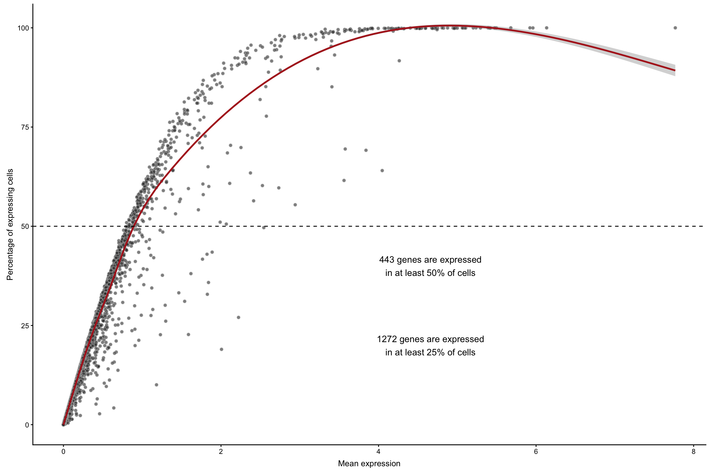
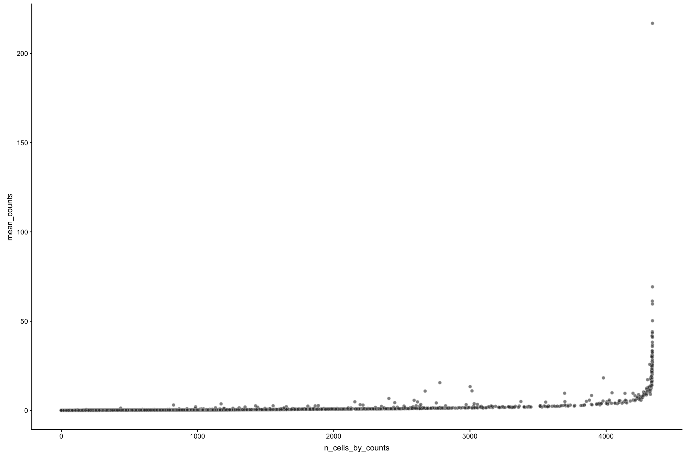
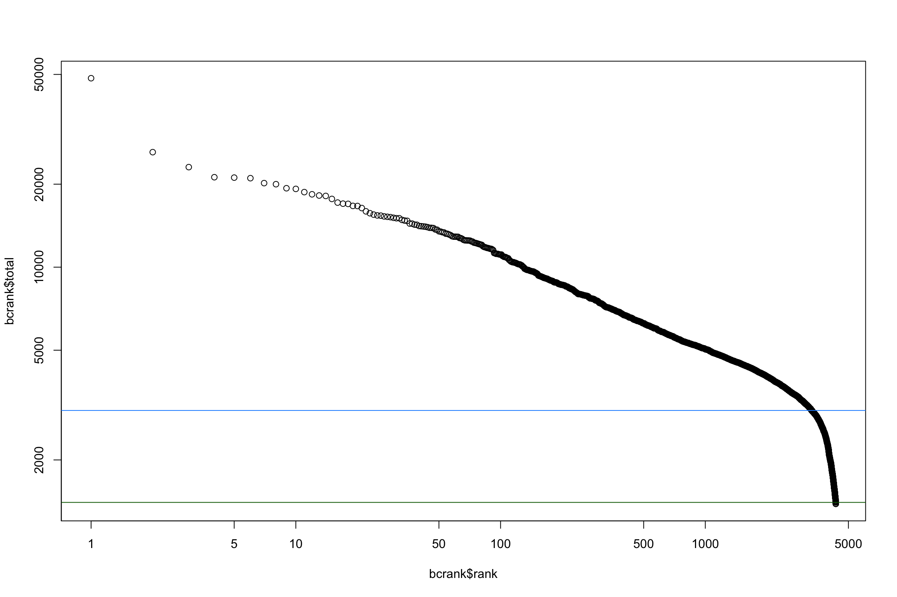

Chapter 3 Clustering and Differential Expression Workflow
Author: Robert A. Amezquita, Fred Hutchinson Cancer Research Center
3.1 Introduction
Introduce the main purpose of this vignette in paragraph form, why these steps are important, what the end products allow for.
3.2 Learning objectives
- In bullet form, illustrate what the main outputs are of this vignette
- A couple of bullet points are fine
3.3 Package requirements
Packages that are required to go through the vignette and how to install them, should largely be through BiocManager interface.
bioc_pkgs <- c("TENxPBMCData",
"scater")
cran_pkgs <- c("tidyverse")
BiocManager::install(pkgs)
install.packages(cran_pkgs)3.4 Preamble
library(tidyverse)3.5 Data
3.5.1 Description of Data
3.5.2 Loading the Data
library(TENxPBMCData)
pbmc4k <- TENxPBMCData('pbmc4k')
## optional: increases memory for loading data into memory
## options(DelayedArray.block.size=8e9) 3.5.3 Exploring the Raw Data
Initial state of the rowdata and coldata.
colData(pbmc4k)[1, ]| Sample | Barcode | Sequence | Library | Cell_ranger_version |
|---|---|---|---|---|
| pbmc4k | AAACCTGAGAAGGCCT-1 | AAACCTGAGAAGGCCT | 1 | v2.1 |
| pbmc4k | AAACCTGAGACAGACC-1 | AAACCTGAGACAGACC | 1 | v2.1 |
| Tissue_status | Barcode_type | Chemistry | Sequence_platform | Individual | Date_published |
|---|---|---|---|---|---|
| NA | Chromium | Chromium_v2 | Hiseq4000 | HealthyDonor1 | 2017-11-08 |
| NA | Chromium | Chromium_v2 | Hiseq4000 | HealthyDonor1 | 2017-11-08 |
rowData(pbmc4k)[1:5, ]| ENSEMBL_ID | Symbol_TENx | Symbol | |
|---|---|---|---|
| ENSG00000243485 | ENSG00000243485 | RP11-34P13.3 | NA |
| ENSG00000237613 | ENSG00000237613 | FAM138A | FAM138A |
| ENSG00000186092 | ENSG00000186092 | OR4F5 | OR4F5 |
| ENSG00000238009 | ENSG00000238009 | RP11-34P13.7 | LOC100996442 |
| ENSG00000239945 | ENSG00000239945 | RP11-34P13.8 | NA |
counts(pbmc4k)[1:5, 1:5]| V1 | V2 | V3 | V4 | V5 | |
|---|---|---|---|---|---|
| ENSG00000243485 | 0 | 0 | 0 | 0 | 0 |
| ENSG00000237613 | 0 | 0 | 0 | 0 | 0 |
| ENSG00000186092 | 0 | 0 | 0 | 0 | 0 |
3.6 Preprocessing
3.6.1 Rename features
Remaps rownames to unique TENx based symbols.
rownames(pbmc4k) <- scater::uniquifyFeatureNames(ID = rowData(pbmc4k)$ENSEMBL_ID,
names = rowData(pbmc4k)$Symbol_TENx)counts(pbmc4k)[1:5, 1:5] %>% .pretty_table("Count data with transformed row identifiers.")| V1 | V2 | V3 | V4 | V5 | |
|---|---|---|---|---|---|
| RP11-34P13.3 | 0 | 0 | 0 | 0 | 0 |
| FAM138A | 0 | 0 | 0 | 0 | 0 |
| OR4F5 | 0 | 0 | 0 | 0 | 0 |
| RP11-34P13.7 | 0 | 0 | 0 | 0 | 0 |
| RP11-34P13.8 | 0 | 0 | 0 | 0 | 0 |
3.6.2 Cell and gene quality control
Initial QC metrics appended to the SCE object.
library(scater)
pbmc4k <- scater::calculateQCMetrics(pbmc4k)knitr::kable(colData(pbmc4k)[1, ], digits = 2, booktabs = TRUE,
caption = "Column data with new entries from `scater::calculateQCMetrics`.")| Sample | Barcode | Sequence | Library | Cell_ranger_version | Tissue_status | Barcode_type | Chemistry | Sequence_platform | Individual | Date_published | is_cell_control | total_features_by_counts | log10_total_features_by_counts | total_counts | log10_total_counts | pct_counts_in_top_50_features | pct_counts_in_top_100_features | pct_counts_in_top_200_features | pct_counts_in_top_500_features |
|---|---|---|---|---|---|---|---|---|---|---|---|---|---|---|---|---|---|---|---|
| pbmc4k | AAACCTGAGAAGGCCT-1 | AAACCTGAGAAGGCCT | 1 | v2.1 | NA | Chromium | Chromium_v2 | Hiseq4000 | HealthyDonor1 | 2017-11-08 | FALSE | 748 | 2.87 | 1738 | 3.24 | 38 | 52.1 | 67 | 85.7 |
knitr::kable(rowData(pbmc4k)[1, ], digits = 2, booktabs = TRUE,
caption = "Row data with new entries from `scater::calculateQCMetrics`.")| ENSEMBL_ID | Symbol_TENx | Symbol | is_feature_control | mean_counts | log10_mean_counts | n_cells_by_counts | pct_dropout_by_counts | total_counts | log10_total_counts | |
|---|---|---|---|---|---|---|---|---|---|---|
| RP11-34P13.3 | ENSG00000243485 | RP11-34P13.3 | NA | FALSE | 0 | 0 | 0 | 100 | 0 | 0 |
scater::plotExprsFreqVsMean(pbmc4k)
scater::plotRowData(pbmc4k, x = 'n_cells_by_counts', y = 'mean_counts')
library(DropletUtils)
bcrank <- DropletUtils::barcodeRanks(as.matrix(counts(pbmc4k)))
## this takes a while...might not ever finish
## e.out <- DropletUtils::emptyDrops(as.matrix(counts(pbmc4k)))
plot(bcrank$rank, bcrank$total, log = 'xy')
abline(h = metadata(bcrank)$inflection, col = 'darkgreen')
abline(h = metadata(bcrank)$knee, col = 'dodgerblue') # use as filtering threshold!
3.6.3 Normalization
Application of normalization approach, even if its just a log normalization on the count data. Cell cycle normalization may be applicable here.
3.6.4 Feature selection
Identifying the subset of the clean matrix to work with.
3.6.5 Dimensionality reduction
Calculating PCs and UMAP/tSNE representation.
3.7 Clustering
Strategy 1 of interest. Use BiocParallel. May need to save intermediate data within package to facilitate fast construction of Rmd.
- SC3
- clusterExperiment
- clustree
- BEARscc # uses ERCC spike ins
- BiocNeighbors # more for devs
3.8 Differential Expression
Strategy 2 of interest. Differential expression approaches. Use one of the outputs from above to perform differential expression analyses comparison.
- zinbwave + edgeR/DESeq2 (may exclude as workflow is very different or highlight as an “advanced section”)
- MAST
- scDD
- SC3